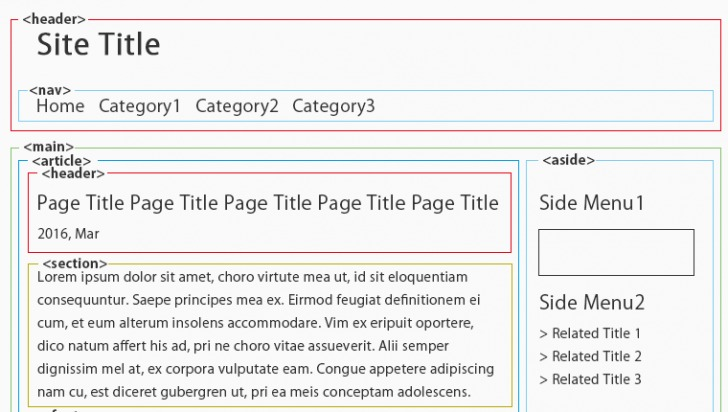
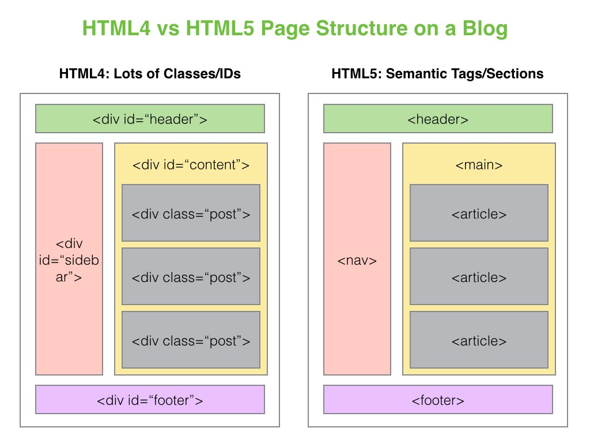

Os elementos semânticos do HTML5 substituem o uso desordenado da tag genérica "div".
Antes do HTML5 a composição do template era feita apenas pelo uso da div:
A tag header define uma área reservada para o cabeçalho. Esta pode estar tanto isolada dentro do body, definindo o cabeçalho do documento, quanto dentro de alguma outra tag, definindo o cabeçalho daquele elemento.